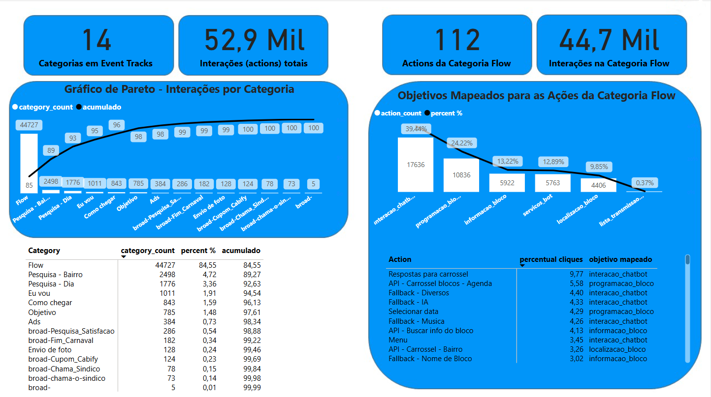
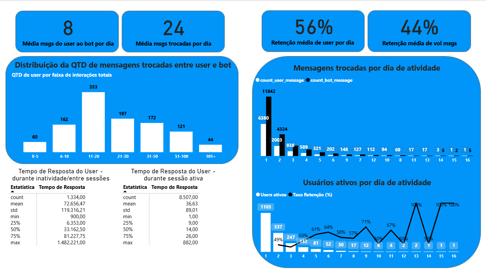
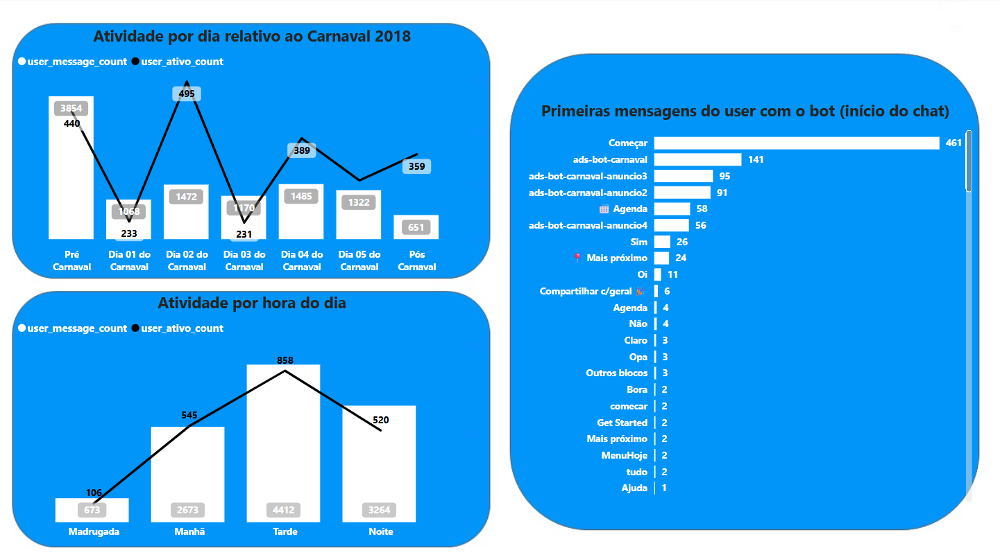
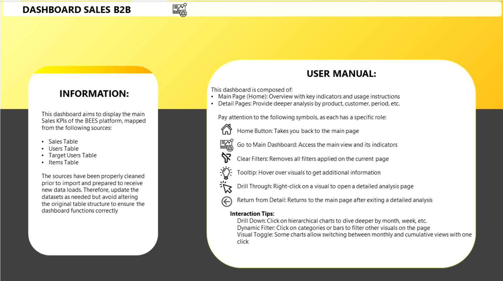
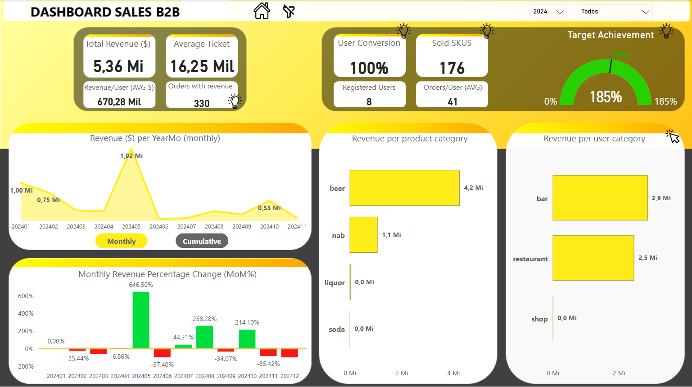
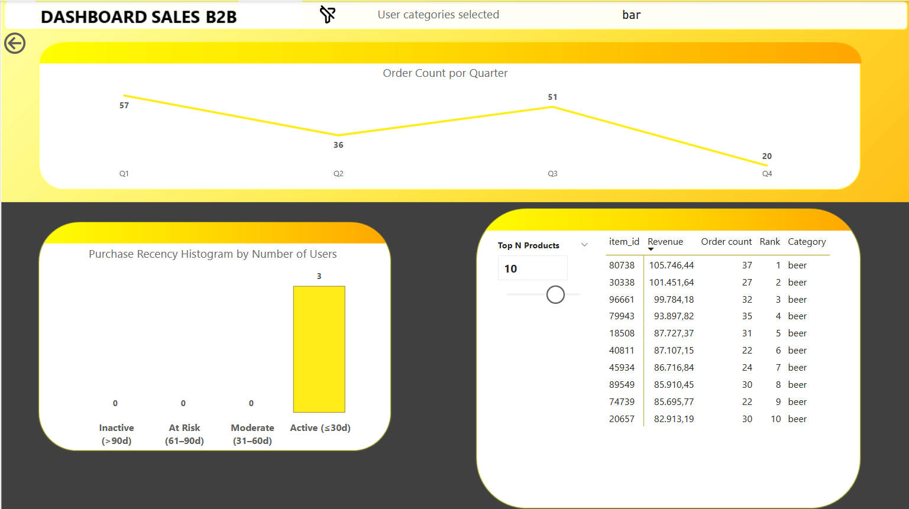

Sou um profissional apaixonado por dados, com experiência em consultoria, finanças e tecnologia. Atuo na área de dados ponta a ponta: da extração e modelagem até a análise e apresentação de insights para o negócio. Tenho domínio de ferramentas como Python, SQL, Power BI e experiência prática com Machine Learning, storytelling com dados e projetos analíticos em diferentes setores.
Desenvolvimento de uma análise ad-hoc a respeito de fraudes na utilização de contas de entregador em um app de delivery.
Ferramentas: SQL, Databricks.
Questões a serem respondidas:
A. Qual dos serviços mais falha?
B. Qual categoria de entregador possui o maior índice de falha na identificação biométrica?
C. Calcule quanto o índice geral de MATCH seria se aumentássemos a similaridade mínima do MATCH para 0.90.
D. Você diria que há alguma relação entre volume de pedidos cancelados de um entregador e o status final do processo de identificação biométrica dele?
Apresentação dos resultados:
Desenvolvimento de uma análise ad-hoc do chatbot, com foco na manipulação de dados com Python e utilização de gráficos do PBi somente para ilustrar os resultados.
Ferramentas: Python, Jupyter Notebook, PowerBi.
Conclusões a partir da análise dos dados gerados:
Gráficos desenvolvidos no PowerBi:
  
Projeto de desenvolvimento de um dashboard com dados de varejo para uma plataforma de vendas online.
Ferramentas: PowerBi.
Abaixo, alguns prints para ilustrar as principais telas desenvolvidas no dashboard:
  